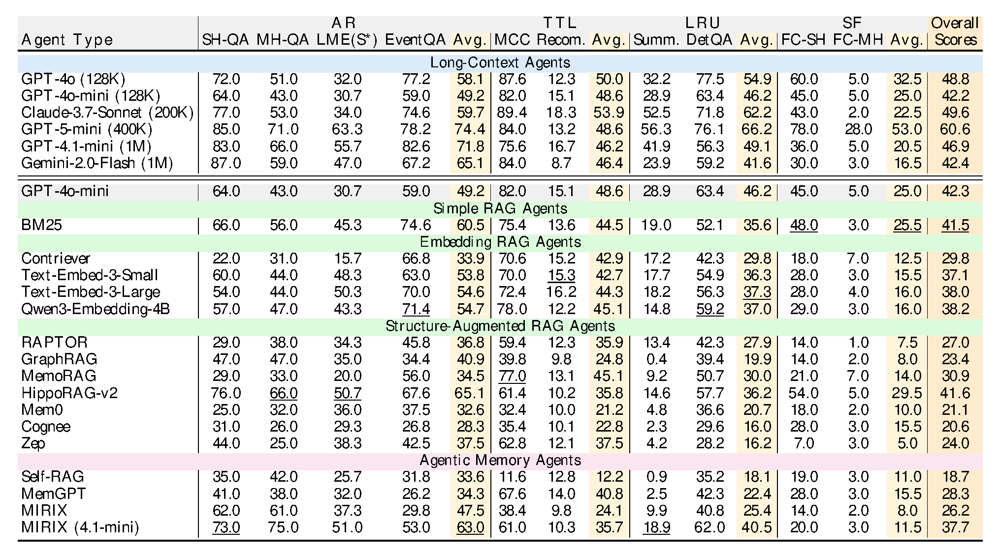
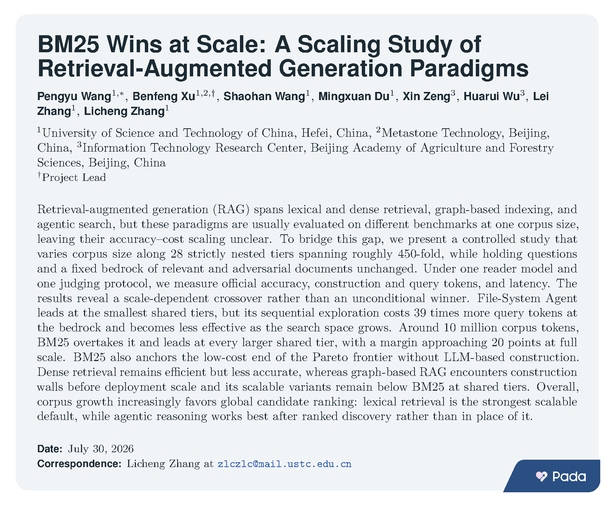
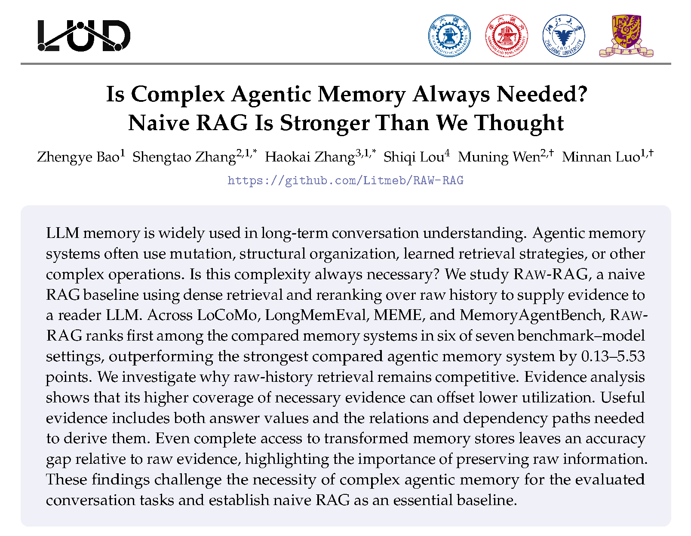
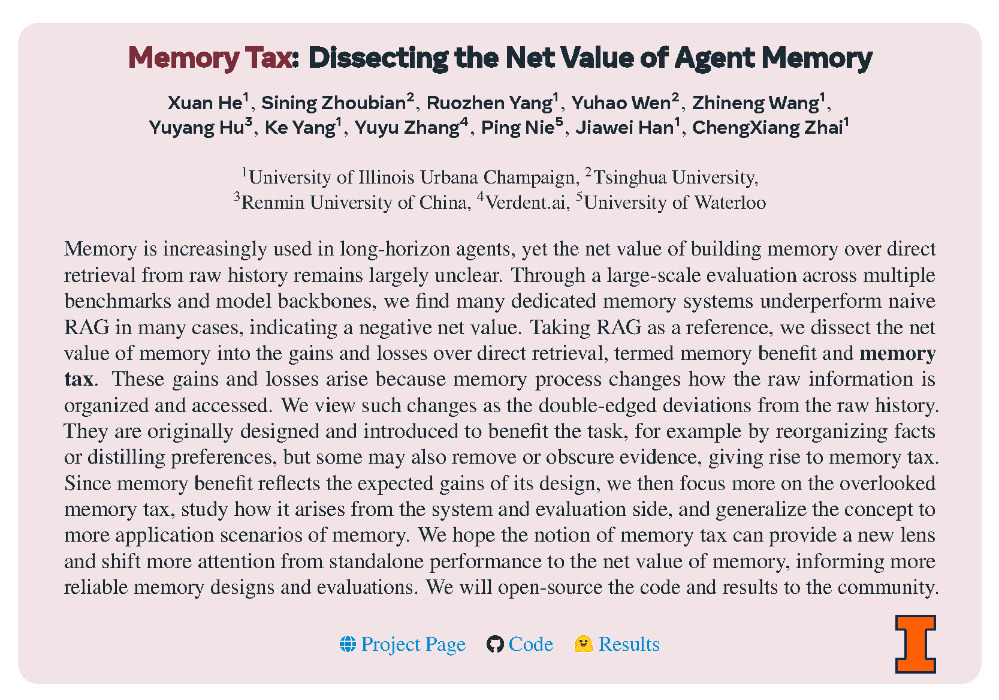
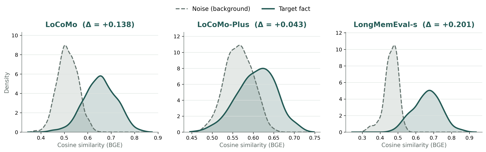
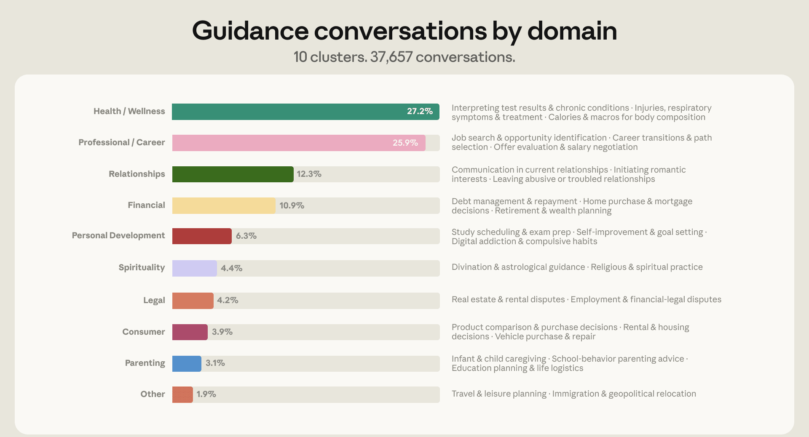
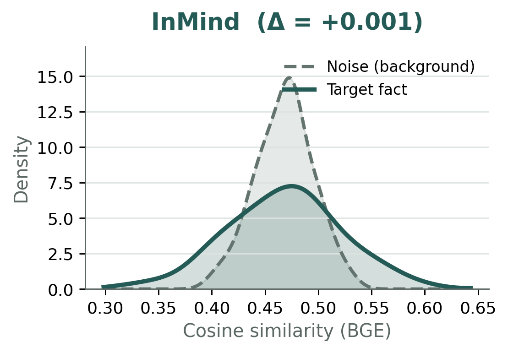
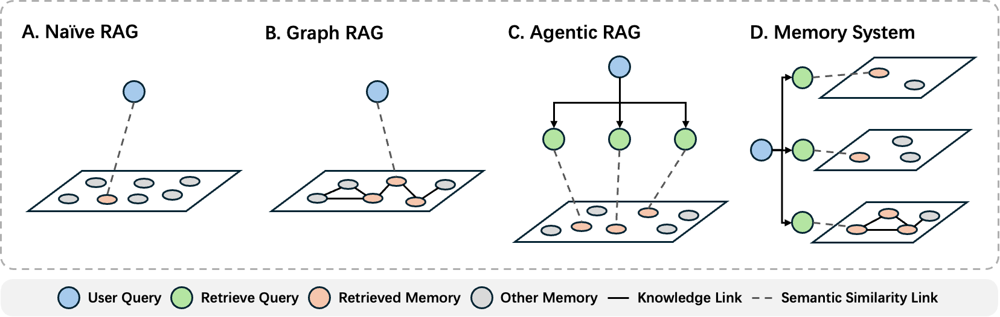
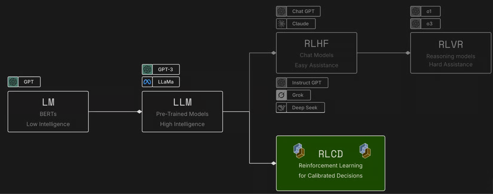
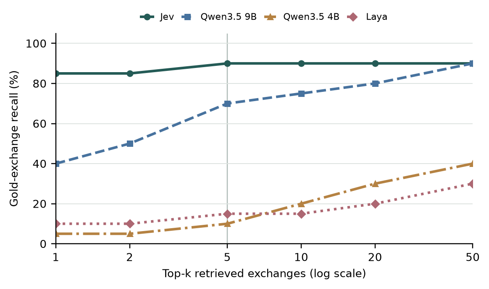

Similarity ≠ Utility
智能体长期记忆系统与测试基准中的盲点
李睿哲 · 中国科学技术大学 (USTC)
EvoAgentX Community Talk · 2026.11.18
主流长期记忆框架
Standard Architecture2 个例子
Direct ✓ · Indirect ✗
Case A · 树坚果过敏与马卡龙
← 滑动底部回复 →
Session #09 · 写入记忆
吃了混合坚果全身起荨麻疹，刚查出树坚果过敏。
AI
已记下你的树坚果过敏信息，后续饮食建议会注意避开。
38 Sessions Later · 直接询问
还记得我对什么过敏吗？
AI
记得，你对树坚果过敏。
✓
38 Sessions Later · 间接提问
周末想试试做马卡龙，有什么食谱？
AI
经典法式马卡龙：准备杏仁粉 100g、糖粉 100g、蛋白 75g……
✗
AI
传统马卡龙含杏仁粉（属树坚果），会引发过敏；建议改用葵花籽粉配方。
✓
Case B · 养猫与百合花
← 滑动底部回复 →
Session #09 · 写入记忆
我家养了一只橘猫，平时特别喜欢啃家里的东西。
AI
好呀，小橘猫很活泼！有养宠问题随时问我。
38 Sessions Later · 直接询问
我家里养了什么宠物？
AI
你家里养了一只猫。
✓
38 Sessions Later · 间接提问
想买束百合插客厅茶几上，怎么养护？
AI
花茎斜剪 45 度插入清水，放在客厅明亮通风处即可……
✗
AI
你家里养了猫，百合全株及花粉对猫有剧毒（可致急性肾衰），切勿带回家中。
✓
target fact
◀── sim ──▶
query
✗
target fact
═══ know ═══▶
query
✓
Benchmark 现状
MemoryAgentBench · ICLR 2026
MAB 原文主表 · 朴素 BM25（绿底行，41.5）击败几乎所有复杂记忆系统（点击图片放大）
近期工作



悬停或点击上方标签切换焦点 · 点击任一截图全屏放大
RESEARCH QUESTION 1
RQ1：Bench 生产过程的 Bias
RQ1：Bench 生产过程的 Bias
Dialog → Query Leakagedialog
[Session 01] 周末去宜家买了盏落地灯……
[Session 03] “我有 2 只猫，分别叫 Ketty 和 Lily。”
[Session 08] 下周二组会要讲一篇多模态论文……
[Session 14] “昨天在救助站又收养了一只小猫！”
[Session 21] 帮我看看这段排序脚本为什么报错……
[Session 29] “很难过，陪我多年的 Ketty 去世了……”
human / LLM
──────▶
Query & Answer
QUERY
“我现在有几只猫？”
ANSWER
2 只（Lily + 新收养小猫）
看着原句提问 → Query 直接共享核心词「猫」
RQ1：Bench 生产过程的 Bias

现有 3 个基准 Target 显著右移 · 仅靠表面余弦相似度即可分离目标记忆
InMind Memory Bench
sim ✗ knowledge ✓InMind Memory Bench
10 Domains · 32 KBs · 125 TasksAnthropic 真实个人咨询分布

37,657 对话 · 10 大生活领域（点击放大）
→
32 个权威 Knowledge Base
FDA / DailyMed
CDC / ASPCA
O*NET / OSHA
CFPB / IRS
DOL / USCIS
W3C / CPSC
3,380 Chunks → 过滤 & 人工核验
→
InMind Memory Bench

125 Tasks · Δ = +0.001（完全重合）
医疗健康：记忆「正在服用卡马西平」 · 提问「早餐喝西柚汁好吗？」 · 知识桥：西柚抑制 CYP3A4 致血药浓度升高
RESEARCH QUESTION 2
RQ2：Memory 系统问题在哪？
RQ2：Memory 系统问题在哪？
extract ? · retriever ? · LLM ?RQ2：Memory 系统问题在哪？
Control 1 · In-Context
① 排除 LLM （绕过检索，直接提供目标事实）
In-Context ControlBypass Retrieval
INJECTED TARGET FACT
“吃了混合坚果起荨麻疹，树坚果过敏”
Query：“周末想做马卡龙，有什么食谱？”
（不提供任何“杏仁粉”提示）
context
──▶
LLM
GPT-5-mini
世界知识推理
世界知识推理
──▶
Assistant Reply✓ 主动预警
“传统法式马卡龙使用杏仁粉（属树坚果），会引发你的过敏反应！建议改用葵花籽粉或南瓜籽粉的无坚果马卡龙配方……”
answer
84.0%
105 / 125 成功预警
RQ2：Memory 系统问题在哪？
Control 2 · Direct Query
② 排除 storage （同一记忆库改用直接提问：准确率 76.0% – 99.2% ✓）
RQ2：Memory 系统问题在哪？
| System | Direct (%) | Indirect (%) | Δ (Indirect − Direct) |
|---|---|---|---|
| Backbone Control (Target in Context) | |||
| Backbone (GPT-5-mini) | — | 84.0 | — |
| Naive RAG | |||
| BM25 | 53.6 | 9.6 | −44.0 |
| Dense (MiniLM) | 92.0 | 9.6 | −82.4 |
| Memory Systems (MiniLM) | |||
| A-RAG | 97.6 | 4.8 | −92.8 |
| xMemory | 84.8 | 4.8 | −80.0 |
| Mem0 | 76.0 | 3.2 | −72.8 |
| A-Mem | 99.2 | 6.4 | −92.8 |
| HippoRAG 2 | 93.6 | 8.8 | −84.8 |
| MemoryOS | 87.2 | 8.0 | −79.2 |
InMind-125 主实验结果 · Direct 高达 76%–99%，Indirect 全线跌至个位数（3.2%–9.6%）
Direct (%)
Indirect (%)
Backbone (上界)
— / 84.0%
Dense (MiniLM)
92.0 / 9.6%
A-Mem
99.2 / 6.4%
A-RAG
97.6 / 4.8%
HippoRAG 2
93.6 / 8.8%
MemoryOS
87.2 / 8.0%
xMemory
84.8 / 4.8%
Mem0
76.0 / 3.2%
RESEARCH QUESTION 3
RQ3：如何解决
RQ3：如何解决 - 定位问题
Storage ✓ · LLM ✓ · Retriever ✗RQ3：如何解决 - 定位问题
World Knowledge in Loop?
所有方案 retriever 阶段都没用到
world knowledge 吗？
world knowledge 吗？
不全是。
eg. A-RAG （LLM 多轮检索规划，Indirect 仍仅 4.8%）
RQ3：如何解决 - 定位问题
点击下方卡片查看各范式失效轨迹
A. Naïve RAG 轨迹：Query「养猫准备建议」 → 向量召回宠物开销、猫砂盆 →「家里有百合」排在百名之外（Indirect 9.6%）
RQ3：如何解决 - 定位问题
换更强的 Embedding 能修好这条虚线吗？ MiniLM (384d) → text-embedding-3-large (3072d)
| System | MiniLM (%) | emb3-large (%) | Gain |
|---|---|---|---|
| Backbone (In-Context 上界) | 84.0 | — | |
| Naive RAG (Dense) | 9.6 | 16.0 | +6.4 |
| A-RAG | 4.8 | 7.2 | +2.4 |
| xMemory | 4.8 | 6.4 | +1.6 |
| Mem0 | 3.2 | 6.4 | +3.2 |
| A-Mem | 6.4 | 9.6 | +3.2 |
| HippoRAG 2 | 8.8 | 5.6 | −3.2 |
| MemoryOS | 8.0 | 14.4 | +6.4 |
Indirect 全部 ≤ 16.0%（距 84.0% 差 ~70 pts）
更强语义表征 ≠ 世界知识桥接
推论
替换虚线 Similarity Link → Plan A
MiniLM
emb3-large
Backbone (84.0%)
Backbone 上界
84.0%
Naive RAG
9.6 → 16.0%
MemoryOS
8.0 → 14.4%
A-Mem
6.4 → 9.6%
A-RAG
4.8 → 7.2%
xMemory
4.8 → 6.4%
Mem0
3.2 → 6.4%
HippoRAG 2
8.8 → 5.6%
RQ3：如何解决 - Plan A：世界知识打分器
Plan A
Plan A : retriever
World Knowledge
全量打分
一个拥有 World Knowledge，能对 memory 进行全量打分的 retriever
RQ3：如何解决 - Plan A：世界知识打分器
Jev · TypeSafe (2026.09)
πq = argsorti ( −sJev(q, mi) ) ·
InMind 挂出两个月后发布 · 逐条输出校准效用概率
RQ3：如何解决 - Plan A：世界知识打分器
Three Properties
①
广泛的世界知识（World Knowledge）
LLM 预训练基座 vs. BERT 判别器
②
可靠的排序分数（Reliable Ranking Scores）
校准决策 RLCD vs. 普通生成模型 Token 概率
③
可承受的全量打分开销（Affordable Full-Pool Scoring）
单题分美分检索账单与规模边界
RQ3：如何解决 - Plan A：世界知识打分器
InMind-125 · 241 Candidates / Query| Method & Indexed Text | R@1 | R@5 | R@10 |
|---|---|---|---|
| BM25, user turn | 1.6 | 4.8 | 5.6 |
| MiniLM, user turn | 0.0 | 2.4 | 8.8 |
| BM25, full exchange | 0.8 | 2.4 | 4.0 |
| MiniLM, full exchange | 0.0 | 1.6 | 7.2 |
| Jev Utility, full exchange | 84.8 | 92.0 | 94.4 |
单题黄金证据排名对照（/ 241）
Jev #1 | MiniLM #54 | BM25 #178
Jev #1 | MiniLM #107 | BM25 #241
| Configuration (GPT-5-mini) | Indirect (%) |
|---|---|
| Backbone (Target in context) | 84.0 |
| Naive RAG (BM25 / emb3-large) | 9.6 / 16.0 |
| A-RAG / A-Mem (emb3-large) | 7.2 / 9.6 |
| HippoRAG 2 (MiniLM) | 8.8 |
| MemoryOS (emb3-large) | 14.4 |
| Jev (Top-5 exchanges) | 76.0 |
端到端 Indirect (%) · 95 / 125 题成功预警
RQ3：如何解决 - Plan A：世界知识打分器
Property ① vs. ② · 20-Task Probe
辨析 ① 与 ②：认出关联 ≠ 排在第一

| Scorer | R@1 | R@5 | R@50 |
|---|---|---|---|
| Laya (ModernBERT) | 10% | 15% | 30% |
| Qwen3.5 4B | 5% | 10% | 40% |
| Qwen3.5 9B | 40% | 70% | 90% |
| Jev | 85% | 90% | 90% |
① R@50（世界知识）：Jev 90% = Qwen-9B 90% ≫ BERT 30%
② R@1（首位排序）：Jev 85% ≫ Qwen-9B 40%
RQ3：如何解决 - Plan A：世界知识打分器
Property ③ · MAB-60 & API Cost| MAB Method | AR | TTL | LRU | SF | Overall |
|---|---|---|---|---|---|
| BM25 (Full) | 60.5 | 44.5 | 35.6 | 25.5 | 41.5 |
| HippoRAG-v2 (Full) | 65.1 | 35.8 | 36.2 | 29.5 | 41.6 |
| ReFind* (60 Qs) | 49.8 | 30.0 | 55.5 | 41.7 | 44.3 |
| Jev Top-5* (60 Qs) | 65.5 | 40.0 | 59.0 | 57.1 | 55.4 |
MAB 60 题分层抽样 (%)
| Run | Mean Candidates | USD / Query |
|---|---|---|
| InMind (Exchanges) | 241.0 | $0.0083 |
| InMind (Sessions) | 47.0 | $0.0057 |
| MAB-60 (Conversations) | 1,258.2 | $0.0310 |
规模瓶颈：全量扫描开销仍随记忆库线性增长 O(N)
RQ3：如何解决 - Plan B：常驻式记忆
Plan B · Rethinking the Paradigm
笔记本 （存库翻查）
───▶
人脑 （内化 / 常驻）
参数记忆？（未来探索方向）
//
常驻摘要（Always-in-State）
RQ3：如何解决 - Plan B：常驻式记忆
200-Line Persistent Markdown| Method (GPT-5-mini) | Direct (%) | Indirect (%) | ΔBackbone |
|---|---|---|---|
| Backbone (Target in context) | — | 84.0 | 0.0 |
| Best Retrieval Configuration | 97.6 | 16.0 | −68.0 |
| Always-in-State（常驻摘要） | 98.4 | 68.8 | −15.2 |
优势：高后果重要约束始终可见，绕开相似度盲区
局限：上下文容量有限，无法容纳海量细粒度历史
RQ3：如何解决 - Plan C
Hybrid Architecture
Hybrid
Always-in-State
高风险核心约束常驻
External Retrieval
细粒度历史效用检索
总结
RQ1 · RQ2 · RQ3
RQ1
Bench Bias
dialog ──▶ query
（词面共享，Δ > 0）
⟶
InMind
32 KBs 反向构造
fact / query
（125 题，Δ = +0.001）
RQ2
问题定位
extract / storage Direct 76%–99% ✓
retriever Indirect 3.2%–16.0% ✗
LLM In-Context 84.0% ✓
RQ3
解决探索
Plan A World Knowledge 全量打分 （Jev · 76.0%）
Plan B Always-in-State 常驻摘要 （68.8%） / 参数记忆？
Plan C Hybrid （Always-in-State + External Retrieval）
Similarity ≠ Utility
target fact
═══ world knowledge ═══▶
query